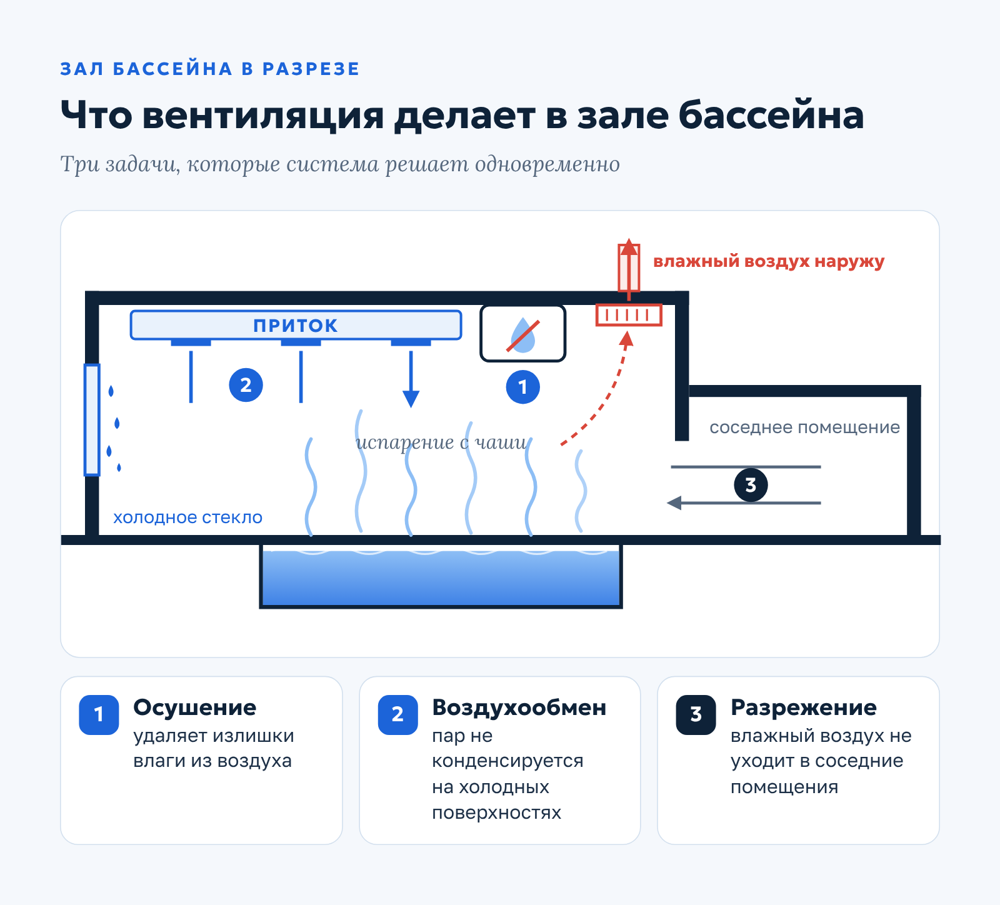
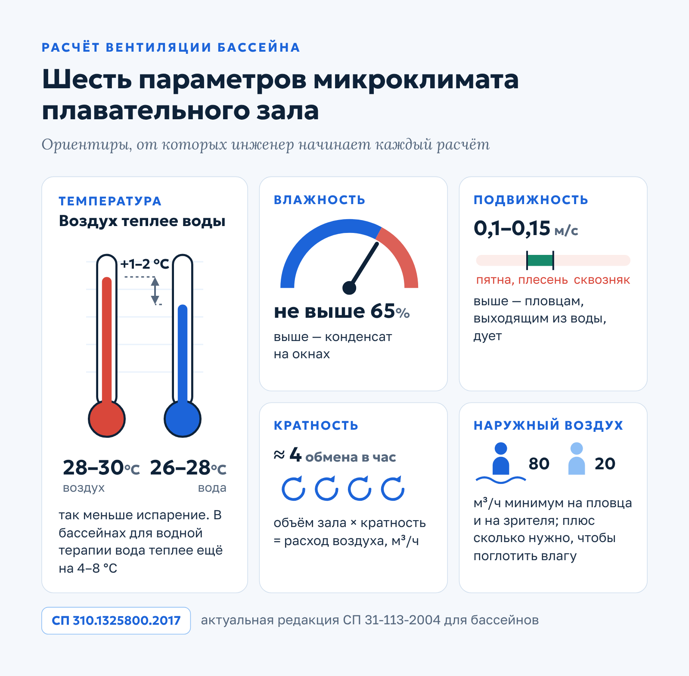
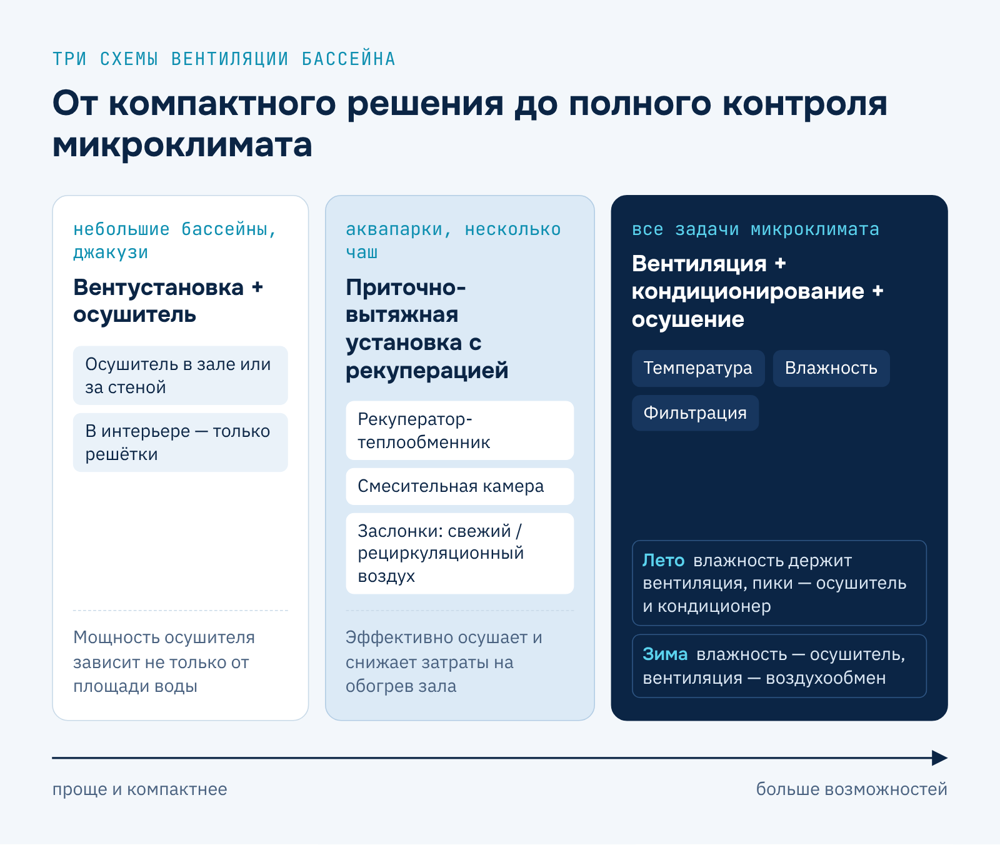
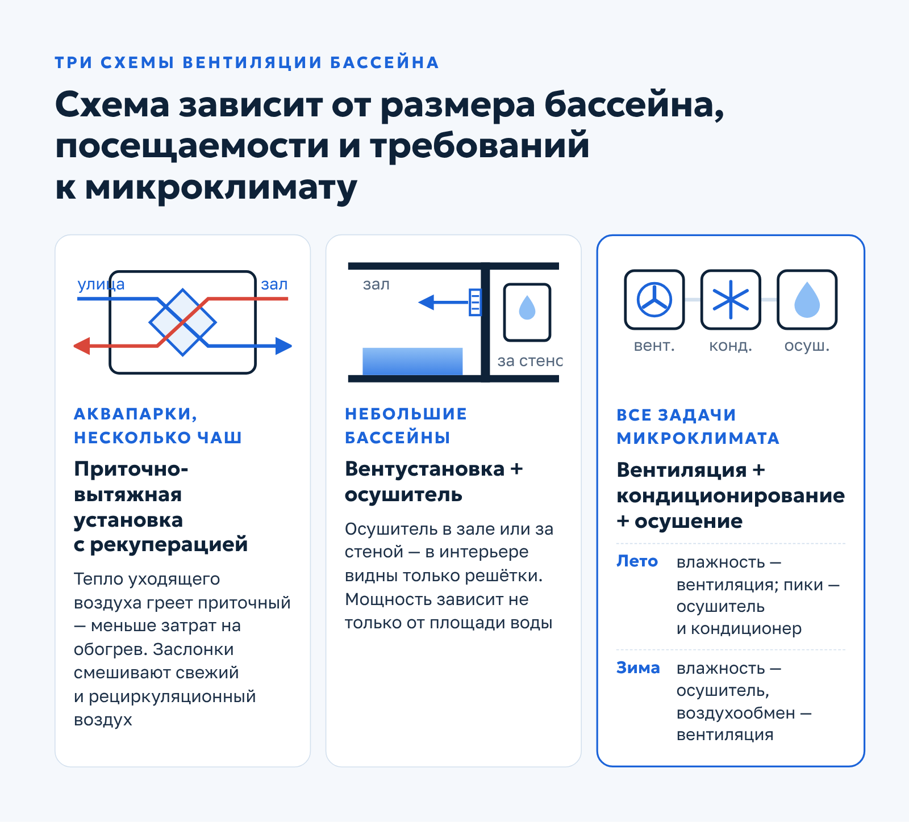
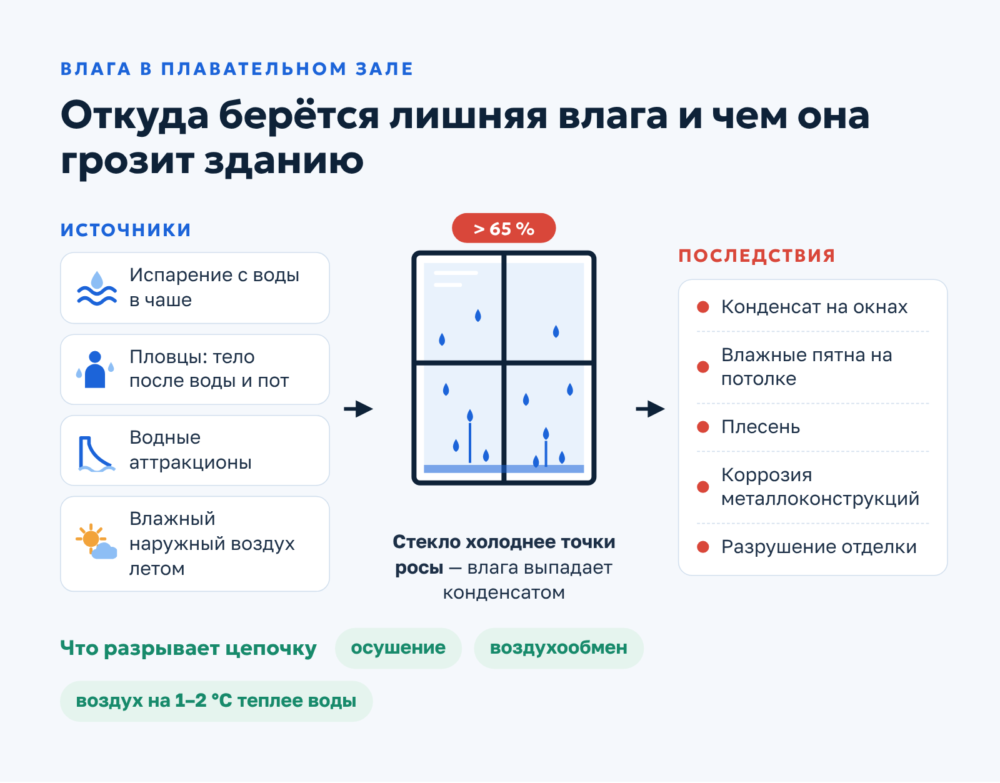
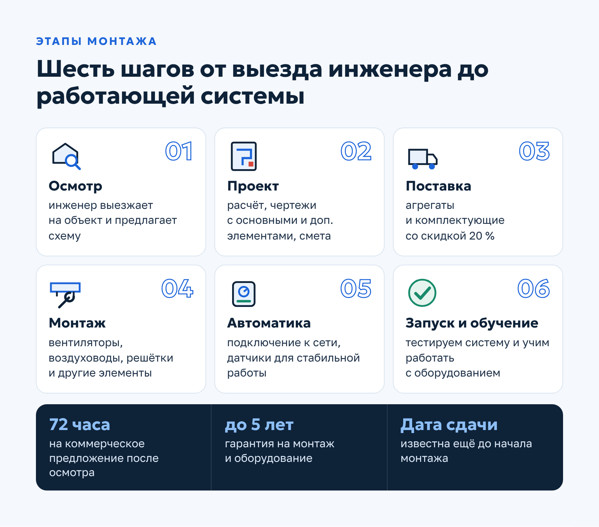

Qwent · Посадочная страница · B2B
Посадочная страница инженерной компании: вентиляция бассейна
О заказчикеQwent — инженерная компания из Москвы (сайт ceds.ru): монтаж и обслуживание систем вентиляции и кондиционирования.
Задача
Написать продающую посадочную страницу об услуге «Вентиляция бассейна»: показать экспертизу в расчете микроклимата, предложить готовые схемы решений и подвести посетителя к заявке на выезд инженера и коммерческое предложение.
Решение
Собрала лендинг по логике «оффер → преимущества → расчет → особенности проектирования → схемы → оборудование → этапы → объекты → FAQ». Расчетный блок построила на шести параметрах микроклимата из свода правил по бассейнам для плавания и нормах воздухообмена; три схемы вентиляции разобрала по типам объектов. Коммерческие блоки опираются на реальные факты компании: число объектов, гарантию, срок подготовки КП, скидку на оборудование, адреса и годы выполненных работ.
Результат
Структурная посадочная страница, которая одновременно объясняет инженерную суть задачи (влажность, конденсат, воздухообмен) и ведет к заявке: каждый смысловой блок заканчивается понятным следующим шагом для клиента.
Вентиляция бассейна
Правильно спроектированная механическая вентиляция продлевает срок службы бассейна и избавляет от внеплановых расходов на ремонт: стены, потолок и конструкции не страдают от конденсата, плесени и коррозии.
Свяжитесь с нами — мы согласуем визит инженера для осмотра помещения, предложим решение для вентиляции зала и чаши бассейна и в течение 72 часов подготовим подробное коммерческое предложение с расчетом стоимости.
Почему выбирают Qwent
Мы проектируем, монтируем и обслуживаем вентиляцию частных и общественных бассейнов. Главное, что стоит знать до первого звонка, — в цифрах.

На счету компании 18 частных и общественных бассейнов с нашими вентсистемами. Инженер приезжает на осмотр и точные замеры бесплатно, а на монтаж и оборудование даем гарантию до 5 лет.
Вы получите надежное решение на годы
Для каждого бассейна мы подбираем свою схему вентиляции: учитываем площадь зала, посещаемость и то, как здание будет эксплуатироваться. Частный бассейн в загородном доме и спортивный комплекс с трибунами требуют разных решений.
Все работы ведем по действующим строительным нормам, сводам правил и санитарным требованиям.
Что дает система вентиляции в бассейне
Над водой постоянно образуется пар. Без принудительного воздухообмена влага оседает на окнах, потолке и стенах, а через несколько сезонов появляются плесень, коррозия металлоконструкций и разрушение отделки. Вентиляция решает несколько задач одновременно.
Защищает здание
Осушение удаляет излишки влаги, а правильно организованный воздухообмен не дает водяному пару конденсироваться на холодных поверхностях. Система также поддерживает в зале небольшое разрежение, чтобы влажный воздух не уходил в соседние помещения.
Создает комфорт для людей
Оптимальная температура и свежий воздух без избытка влаги — то, что посетители чувствуют сразу. В таком зале легче тренироваться и приятнее отдыхать, а у владельца коммерческого бассейна меньше поводов для жалоб.

Приток, вытяжка и осушение работают только вместе: если выпадает одно звено, влага оседает на окнах и потолке.
Главная задача вентиляции в бассейне — убрать лишнюю влагу. Температура, свежесть и подвижность воздуха важны, но именно контроль влажности защищает здание от конденсата и коррозии.
Наши услуги: от проекта до сервиса
Мы ведем объект на всех этапах — от первого расчета до регулярного обслуживания готовой системы.
Проектирование
Разрабатываем проект под особенности объекта и подбираем решения, которые обходятся дешевле в эксплуатации. Каждый проект соответствует нормативным требованиям.
Монтаж
К монтажу вентсистем в бассейнах особые требования: высокая влажность и химические реагенты в воде быстро выводят из строя обычные материалы. Мы устанавливаем оборудование строго по проекту и закладываем в смету компоненты с антикоррозийной защитой.
Обслуживание и ремонт
При регулярном обслуживании чистим и дезинфицируем систему, проверяем состояние установки и отдельных элементов, проводим профилактический осмотр и мелкий ремонт.

Так объект от первого расчета до регулярного сервиса остается в одних руках. А начинается любая система с расчета: от него зависят мощность оборудования, схема воздухообмена и в итоге стоимость эксплуатации.
Как рассчитать вентиляцию бассейна
Вентиляцию бассейна рассчитывают по шести параметрам микроклимата. Основной документ для проектировщика — свод правил по бассейнам для плавания: СП 31-113-2004, сейчас действует его актуализированная редакция СП 310.1325800.2017. Общие требования к системам вентиляции задает СП 60.13330.2020 «Отопление, вентиляция и кондиционирование воздуха».
Температура воздуха
Чем теплее воздух в зале по сравнению с водой, тем меньше испарение с поверхности. Поэтому воздух поддерживают на 1–2 °C теплее воды: в плавательном зале — 28–30 °C, вода — 26–28 °C. В бассейнах для водной терапии вода теплее еще на 4–8 °C, и это нужно учитывать в расчете.
Относительная влажность
Относительная влажность воздуха в зале плавательного бассейна не должна превышать 65 %. Если показатель выше, на окнах и холодных поверхностях начинает выпадать конденсат.
Влаговыделения
В проекте вентиляции бассейна учитывают все источники влаги: испарение с поверхности воды в чаше, потоотделение при интенсивных занятиях спортом, работу водных аттракционов и влажный наружный воздух, который летом попадает в зал вместе с приточным.
Подвижность воздуха
Скорость движения воздуха в зале поддерживают в пределах 0,1–0,15 м/с. Если циркуляция недостаточная, на потолке появляются влажные пятна, покрытия деформируются, развивается плесень. Если скорость выше, у пловцов, выходящих из воды, возникает ощущение сквозняка.
Кратность воздухообмена
Ориентир для зала плавательного бассейна — около 4 обменов воздуха в час. Чтобы оценить требуемую производительность установки, объем зала (площадь × высота) умножают на кратность воздухообмена — получают расход воздуха в м³/ч.
Расход наружного воздуха
Объем наружного воздуха рассчитывают так, чтобы он ассимилировал (поглощал) выделяющуюся влагу. В теплый и холодный период года этот показатель разный. Санитарный минимум по своду правил — не менее 80 м³/ч на одного пловца и 20 м³/ч на одного зрителя.

Все шесть параметров связаны между собой: изменение температуры воды или посещаемости меняет количество испаряющейся влаги, а значит, и требуемый расход воздуха. Поэтому точный расчет делают по каждому объекту отдельно, а не по типовой таблице.
Особенности проектирования вентиляции бассейнов
Бассейн — одно из самых сложных помещений для проектировщика вентиляции. Ниже — задачи, которые приходится решать на каждом объекте.
Испарение с поверхности воды
Основной источник влаги — испарение с водной поверхности чаши и с тела пловцов. Только с учетом обоих источников можно рассчитать объем воздуха, который даст гигиенический минимум и удержит относительную влажность в допустимых пределах.
Конденсат и точка росы
Окна запотевают, когда температура стекла опускается ниже точки росы воздуха в зале. Постоянный конденсат разрушает здание и увеличивает расходы на ремонт, а в сыром зале неуютно — и посетители теряют интерес к объекту.

Чтобы разорвать эту цепочку, недостаточно просто открыть окно или поставить вытяжной вентилятор: влагу нужно удалять системно, с запасом на пиковые нагрузки — например, на часы, когда в зале больше всего пловцов.
Осушение воздуха
Способ осушения выбирают в зависимости от типа объекта. Для небольших помещений — комнат с джакузи, маленьких бассейнов, в том числе в отелях — часто достаточно настенного осушителя. Для крупных объектов, например школьных и больших частных бассейнов, используют канальные осушители, которые распределяют воздух по сети воздуховодов.
Размещение осушителей
Осушители устанавливают на полу в техническом помещении, подвешивают к потолку или монтируют снаружи. Сами по себе они удаляют влагу, а свежий воздух подает вентиляция, поэтому в большинстве проектов эти системы работают в связке. Оборудование для бассейнов выбирают с высоким классом коррозионной стойкости.
Три схемы вентиляции бассейна
Мы применяем три основных решения. Выбор зависит от размера бассейна, посещаемости и требований к микроклимату.
Приточно-вытяжная установка с рекуперацией
Оптимальна для аквапарков и крупных объектов с несколькими чашами. Установка обычно включает рекуператор — теплообменник, который передает тепло удаляемого воздуха приточному. Такая система эффективно осушает воздух и снижает затраты на обогрев зала. Смесительная камера и система заслонок регулируют соотношение свежего и рециркуляционного воздуха.
Вентиляционная установка и осушитель
Вариант для небольших бассейнов. Осушитель монтируют прямо в зале или за стеной в смежном помещении, так что в интерьере видны только декоративные решетки.
Мощность осушителя зависит не только от площади водной поверхности. Важны температура воздуха и воды, режим использования бассейна и то, накрывают ли чашу защитным покрытием, когда бассейном не пользуются.
Вентиляция, кондиционирование и осушение
Комбинация, которая решает все задачи сразу: поддерживает комфортную температуру и нужную влажность, фильтрует воздух. Системы распределяют нагрузку между собой по сезонам:
- летом влажность поддерживает вентиляция, а осушитель и кондиционер включаются в периоды пиковой нагрузки;
- зимой влажность контролирует осушитель, а вентсистема отвечает за воздухообмен.
В такой связке каждая система включается тогда, когда она нужна, а микроклимат в зале остается стабильным при любой погоде и загрузке.

Окончательную схему инженер предлагает после осмотра объекта и расчета влаговыделений: на выбор влияют не только размеры чаши, но и то, сколько людей будет плавать одновременно и как часто.
Основные правила проектирования
Независимо от выбранной схемы, в каждом нашем проекте соблюдаются шесть принципов:
- эффективное удаление влаги и осушение воздуха;
- оптимальная скорость движения воздуха в зоне пребывания людей;
- материалы, устойчивые к влаге и химическим реагентам;
- точный расчет мощности оборудования;
- решение, подобранное под площадь и посещаемость бассейна;
- сбалансированные подача свежего и удаление отработанного воздуха.
Стоит упустить хотя бы один — и в эксплуатации появятся конденсат на окнах, запах сырости, лишние расходы на отопление.
Наши преимущества
За каждым проектом стоят люди, которые отвечают за результат от сметы до сдачи объекта.
Опыт. Более 12 лет проектируем и монтируем системы механической вентиляции бассейнов, работаем с объектами любой сложности.
Проект от эксперта. Наши специалисты много лет занимаются проектированием вентиляции бассейнов, поэтому система работает так, как заложено в расчете.
Пунктуальность. Не завышаем стоимость, бережно расходуем бюджет и сдаем объект в оговоренный срок.
Сервис. Сопровождаем клиента на каждом этапе — от составления технического задания до бесплатного обучения работе с установкой.
Используемое оборудование
Мы сотрудничаем с ведущими производителями вентиляционного и климатического оборудования и предлагаем клиентам цены на 20 % ниже рыночных. В проектах вентиляции бассейнов используем:
| Группа | Оборудование |
|---|---|
| Подача и удаление воздуха | Вентиляторы, приточные установки, вытяжные зонты |
| Воздухораспределение | Воздуховоды, вентиляционные решетки, диффузоры |
| Подготовка воздуха | Фильтры, канальные нагреватели |
| Управление | Системы автоматики |
Конкретные модели подбираем под расчет: от производительности и класса коррозионной стойкости зависят и надежность системы, и стоимость ее эксплуатации.
Точный состав оборудования инженер определяет после осмотра объекта и расчета влаговыделений, а затем закладывает его в смету.
Хотите узнать стоимость?
Подготовьте информацию об объекте и отправьте ее нам на почту или свяжитесь с менеджером по телефону либо в чате. Мы согласуем выезд инженера и в течение 72 часов вышлем коммерческое предложение с ценой вентиляции для вашего бассейна.
Этапы монтажа
Работа над объектом проходит шесть последовательных этапов. На каждом из них вы знаете, что происходит и кто отвечает за результат.
- Осмотр помещения. Инженер-проектировщик выезжает на объект и предлагает оптимальную схему вентиляции бассейна.
- Проект. Выполняем расчет вентиляции, готовим чертежи с основными и дополнительными элементами, формируем смету.
- Поставка оборудования. Поставляем агрегаты и комплектующие на особых условиях — со скидкой 20 %.
- Монтаж. Устанавливаем вентиляторы, воздуховоды, решетки и другие элементы системы.
- Автоматика. Подключаем установку к сети, монтируем датчики, чтобы система работала стабильно и без сбоев.
- Проверка и обучение. Тестируем систему и обучаем ответственных специалистов или владельцев работе с оборудованием.
Сроки согласуем с заказчиком заранее и придерживаемся оговоренной даты сдачи объекта — она известна еще до начала монтажа.

После запуска система не остается без присмотра: мы выполняем регулярное обслуживание — очистку, дезинфекцию и проверку оборудования, чтобы микроклимат в зале оставался стабильным из года в год.
Наши работы
Опыт Qwent не ограничивается бассейнами. Вот несколько крупных объектов, где компания смонтировала системы вентиляции.
Гипермаркет «Леруа Мерлен»
Москва, Варшавское шоссе, 21-й километр, 25Ю/5. Работы выполнены в 2020 году, общая площадь объекта — 2000 м².
Как мы организовали вентиляцию торгового зала такого масштаба, показано в описании проекта в «Леруа Мерлен».
Завод фармацевтического оборудования
Московская область, Раменский район, с. Ганусово, ул. Луговая, 1А. Работы выполнены в 2021 году, общая площадь объекта — 1680 м².
Табачная фабрика DarkSide
Москва, 43-й км Минского шоссе, вл. 1, к. 1. Работы выполнены в 2019 году, общая площадь объекта — 3000 м².
Состав оборудования и особенности вентиляции производственного цеха можно посмотреть в кейсе табачной фабрики DarkSide.
Часто задаваемые вопросы
Собрали ответы на вопросы, которые заказчики задают чаще всего еще до выезда инженера.
По каким нормам проектируется вентиляция бассейнов?
Требования к параметрам воздуха в зале изложены в своде правил по бассейнам для плавания — СП 31-113-2004, сейчас действует актуализированная редакция СП 310.1325800.2017. Общие требования к вентиляции — в СП 60.13330.2020 «Отопление, вентиляция и кондиционирование воздуха».
Какие параметры микроклимата нужно поддерживать?
Температура воздуха — около 30 °C, воды — около 28 °C: воздух должен быть теплее воды. Относительная влажность — не выше 65 %, скорость движения воздуха — 0,1–0,15 м/с.
Как контролировать влажность в бассейне?
Для небольших частных бассейнов достаточно осушителя: прибор монтируют в помещении, и он хорошо удаляет влагу из воздуха. На больших объектах используют полноценную систему вентиляции с сетью воздуховодов и канальными осушителями.
Какие ориентировочные сроки и стоимость работ?
Пока инженер не видел объект, сроки и цены можно назвать только приблизительно. Для частного объекта ориентир — от 10 000 до 20 000 рублей за 1 м² площади водной поверхности. Сроки зависят от площади и сложности работ: монтаж вентсистемы в небольшом частном бассейне занимает от 2 до 5 недель.
Чтобы получить точный расчет, отправьте нам параметры бассейна — размеры зала и чаши, температуру воды, ожидаемую посещаемость. Инженер подготовит предварительную оценку и согласует с вами выезд на объект.
Как сделать заказ?
Позвоните нам по телефону +7 (495) 055-72-55 или отправьте запрос на почту order@ceds.ru. Также на сайте есть форма «Обратный звонок» и чат, где можно задать вопрос специалисту.